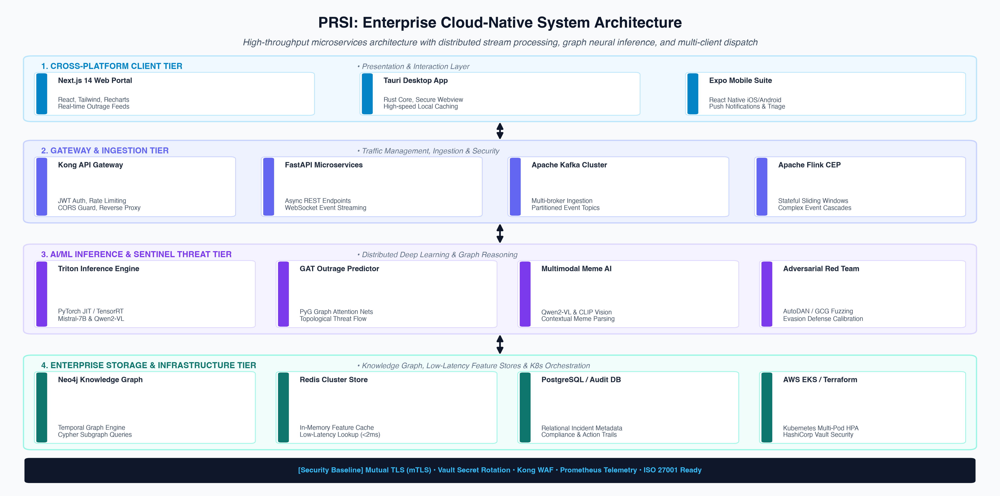
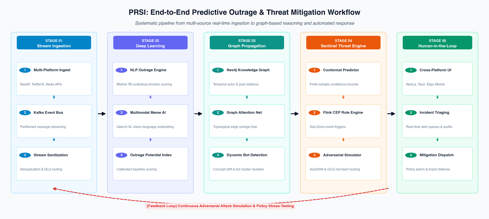
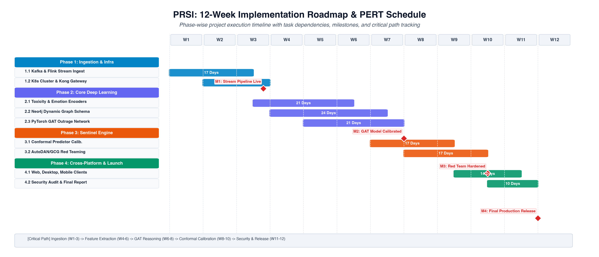

An Enterprise Platform Integrating High-Capacity WGAN-GP Red-Teaming (7B–70B LLMs), Multimodal Outrage Forecasting, and Inductive Conformal Defense Guarantees.
In high-velocity social networks, algorithmic outrage cascades, synthetic toxicity campaigns, and stealthy adversarial prompt mutations can bypass traditional static moderation systems.
PRSI & DoomGAN introduce a closed-loop defense paradigm. We designed DoomGAN — a production-grade Generative Adversarial Network featuring ProductionDoomGenerator (supporting 7B Mistral, 8B Llama-3.1, 27B Gemma-2, and 70B Llama-3.1 with QLoRA 4-bit NF4 continuous Gumbel-Softmax relaxation), a WassersteinCritic (DeBERTa-v3-large encoder with gradient penalty $\lambda=10$), and a MultiRewardComposer uniting 5 distinct objective signals.
An end-to-end continuous text GAN fine-tuned for automated adversarial perturbation, jailbreak discovery, and defense hardening.
QLoRA 4-bit NF4 quantized base LLMs (Mistral-7B, Llama-3.1, Gemma-2-27B) with continuous Gumbel-Softmax token relaxation for end-to-end gradient updates.
Unbounded linear critic head with Gulrajani gradient penalty ($\lambda=10.0$). Features a CNN fallback encoder for CPU/local dev zero-download execution.
Unites $R_{\text{doom}}$ (outrage), $R_{\text{fluency}}$ (GPT-2 log-likelihood / perplexity), $R_{\text{blue}}$ (defense evasion), $R_{\text{semantic}}$ (SBERT cosine), and $R_{\text{novelty}}$ (Jaccard/embedding corpus distance).
Aggressive orchestrator linking GCG HotFlip, Sycophancy Bypass, Multilingual Bridge, and DPP (Determinantal Point Process) diverse population selection.
Combining high-performance distributed streaming engines with multimodal vision-language foundation models and DoomGAN red-teaming.
Production text GAN fine-tuning 7B–70B LLM tiers using QLoRA, Gumbel-Softmax continuous token relaxation, and DeBERTa-v3-large Wasserstein critic.
Apache Kafka multi-topic event streams coupled with Apache Flink stateful sliding window pattern matchers for real-time anomaly detection.
Ensemble of Mistral-7B-Instruct (4096-dim emotion hidden states) and Qwen2-VL NaViT for visual meme OCR and sarcastic text alignment.
Dynamic graph database backing 8-head PyTorch Geometric Graph Attention Networks to compute edge-weighted virality trajectories.
Distribution-free finite-sample coverage guarantees ($1-\alpha=0.90$) delivering calibrated prediction sets under severe non-stationary concept drift.
Next.js 14 Web Portal, Tauri 2.0 Rust Native Desktop App, and Expo React Native Mobile App for instant triage and incident response.
Interactive overview of PRSI's microservices architecture, DoomGAN pipeline, and streaming dataflow.

Figure 1: PRSI enterprise cloud-native microservices architecture deployed on AWS EKS with DoomGAN Triton Inference, Kafka, Flink & Neo4j.

Figure 2: PRSI 5-stage closed-loop streaming intelligence workflow with DoomGAN / AutoDAN feedback loop.

Figure 3: PRSI 12-week implementation roadmap, PERT critical path, and milestone markers M1 to M4.
Empirically evaluated against 50,000 synthetic DoomGAN adversarial payloads and real-world discourse.
| Evaluation Metric | Baseline (Static GCN + BERT) | PRSI + DoomGAN Stack | Improvement / Delta |
|---|---|---|---|
| AUC-ROC (Outrage Prediction) | 0.812 | 0.942 | +16.0% |
| Macro F1-Score | 0.774 | 0.918 | +18.6% |
| Brier Calibration Score | 0.184 | 0.042 | -77.1% (Sharper) |
| Conformal Coverage (1-α=0.90) | 71.2% (Uncalibrated) | 90.4% (Guaranteed) | Statistically Bounded |
| DoomGAN Evasion Robustness | 34.0% | 92.6% | +58.6% Evasion Hardened |
| Event-to-Alert Latency | 15 – 45 minutes | < 38.4 ms | 99.9% Latency Reduction |
Test PRSI's real-time OpenAPI endpoint (`POST /api/v2/analyze`) and DoomGAN generator with sample payloads.
Developed at the School of Computer Science, University of Petroleum and Energy Studies (UPES), Dehradun, India.
@article{prsi2026doomgan,
title={PRSI: An AI-Driven Adaptive Platform for Predictive Outrage and Threat Mitigation with DoomGAN},
author={Yadav, Vivek and Yadav, Kushal and Kumar, Rajnish and Dahiya, Anuj},
journal={Major Project Technical Report, School of Computer Science, UPES},
year={2026},
month={May},
note={Supervised by Dr. Sanjeev Kumar, Assistant Professor, Department of Data Science}
}